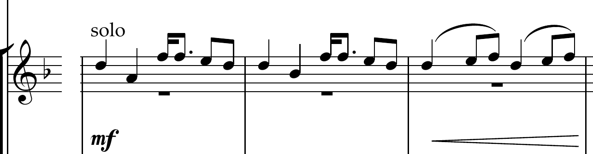
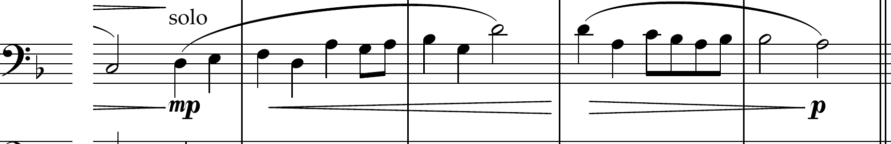
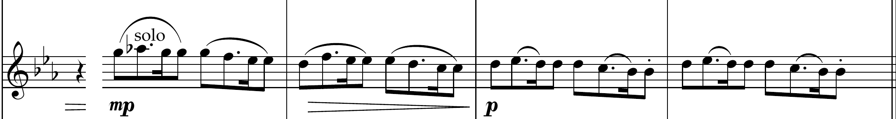

The waves off Nazaré, on the Atlantic coast of Portugal, are among the largest in the world: in winter, swells from the open ocean are funnelled by an undersea canyon and break close to the shore.
The piece is an overture, an abertura, for symphonic band, about the stormy ocean there: dramatic and frightening, Romantic in manner but modern.
It opens Maestoso con moto with a solo horn over the band, slows to Meno mosso in the middle, and returns to the opening tempo. Along the way, solos for euphonium and oboe come out of the full band.
Solos
100%
Horn I solo, mf · bars 3–6

Euphonium solo, mp · bars 61–65

Oboe I solo, mp · bars 158–161

Instrumentation
For wind orchestra
Woodwinds
Piccolo I, II Flute I, II, III Oboe I, II Cor anglais Clarinet in B♭ I, II, III Bass clarinet Bassoon
Saxophones
Alto I, II Tenor
Brass
Horn in F I–IV Trumpet in B♭ I, II, III Soprano cornet in E♭ Trombone I, II, III Bass trombone Euphonium Tuba